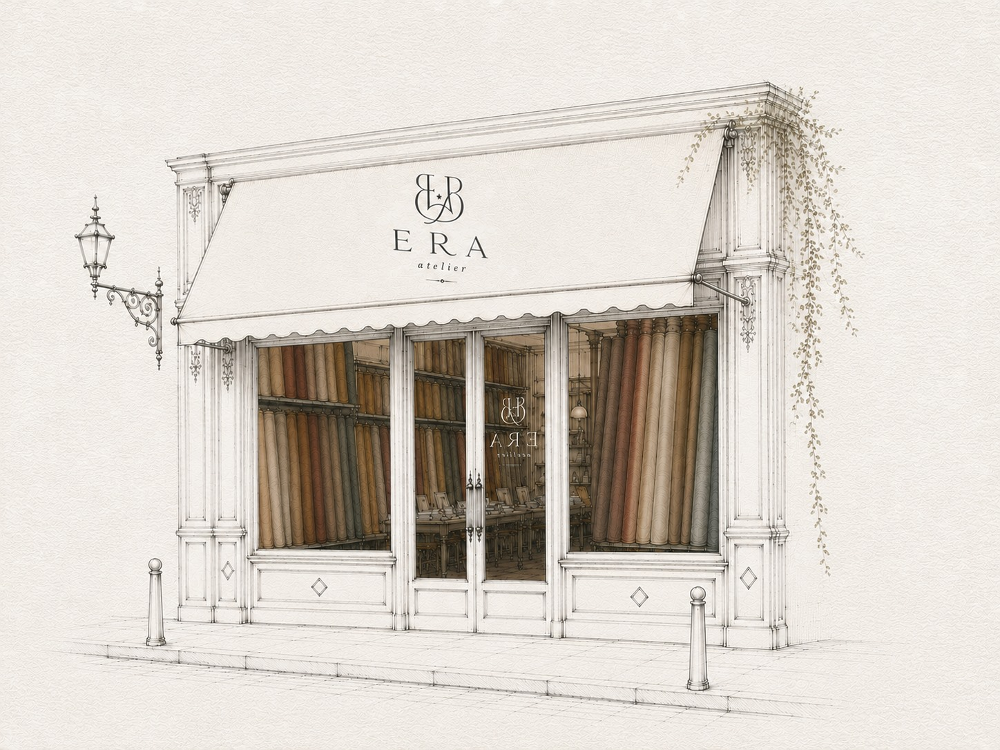
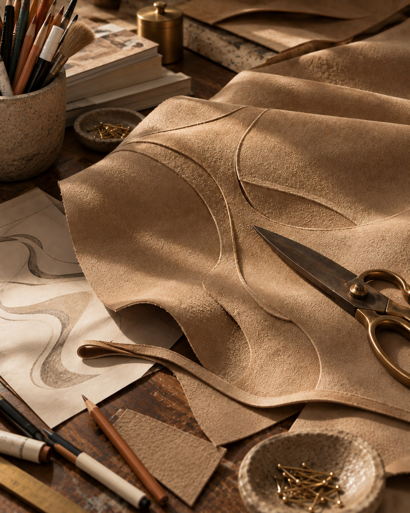
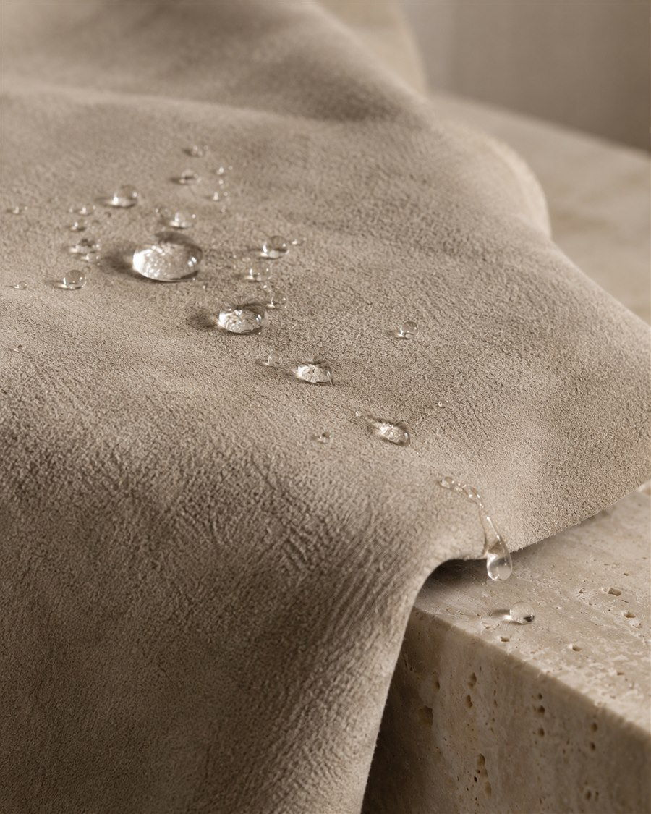
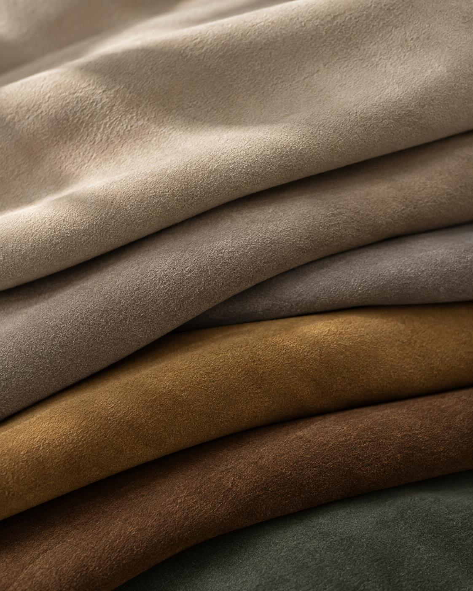
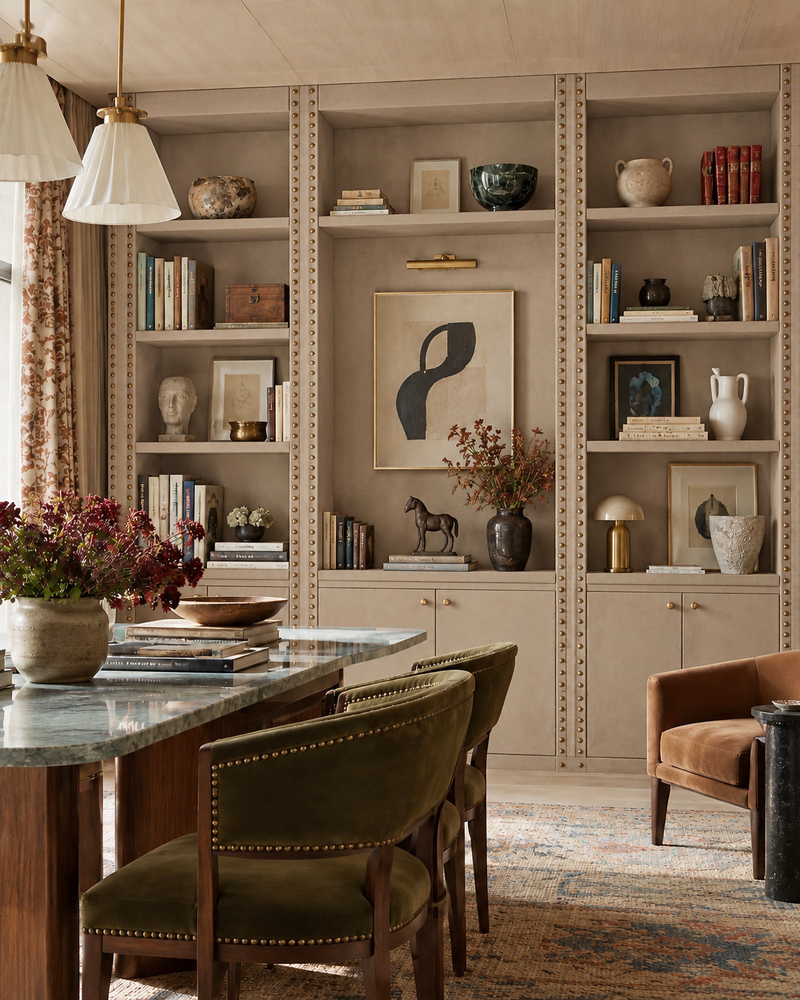
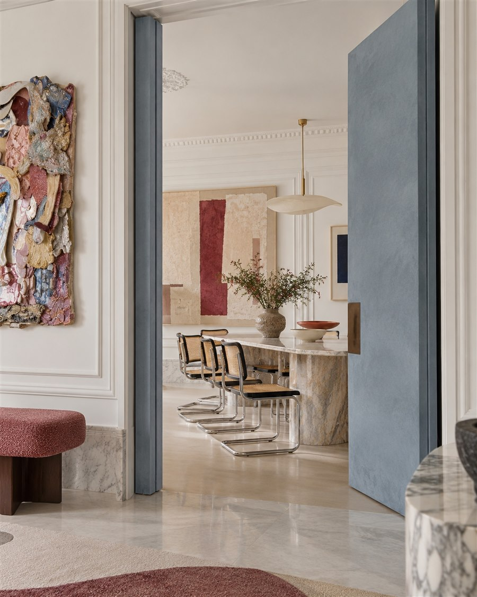

Curadoria de couros e camurças para estofados, ambientes, móveis e peças autorais.

Pele, fibra, papel em branco — toda superfície carrega uma origem. O Era um atelier nasceu do encontro entre um curtume de confiança e o olhar de quem projeta — uma curadoria pensada para servir ao seu projeto, não para preencher um catálogo.
Oferecemos acompanhamento próximo em cada etapa do seu projeto — da escolha da textura até a transformação.

Quatro categorias de matéria-prima em curadoria, começando pelo couro. Consulte disponibilidade e condições diretamente pelo WhatsApp.
Acabamento uniforme, ideal para grandes metragens e projetos com prazo definido. Disponível em cores padrão de pronta entrega ou cor personalizada sob consulta.

Tratamento hidrorrepelente — protege no dia a dia, sem abrir mão da textura.

Da areia ao musgo, tons que dão vida e encanto a cada espaço.
Textura exclusiva para peças autorais e projetos de alto padrão, em curadoria para o catálogo.
Próxima categoria em curadoria, para ampliar o leque de matéria-prima do atelier.
Próxima categoria em curadoria, para ampliar o leque de matéria-prima do atelier.
Couro é material natural: pequenas variações de cor e textura entre peças fazem parte da sua identidade.
Um processo simples, pensado para dar segurança em cada etapa do seu projeto.
Navegue pela nossa coleção e identifique o revestimento ideal para o seu projeto.
Falamos direto com você sobre disponibilidade, quantidade e prazo — sem burocracia.
Sem intermediários: o material sai da curadoria direto para o seu projeto.


Um canal direto para quem projeta. Fale com a gente para tirar dúvidas, consultar materiais e acompanhar o seu projeto de perto.
Curadoria e Design
Designer de interiores formada pela Escola Panamericana de Arte e Design
Cresceu dentro de um curtume e garante que o catálogo da Era reúna só os melhores produtos, para atender cada projeto de forma única.
Gestão e Operação
Engenheiro de Produção formado pela UFPE
Cuida dos bastidores da Era para que prazos, pagamentos e entregas aconteçam exatamente como combinado.